Haushaltsbuch
Der Monat auf einen Blick: was reinkommt, was rausgeht, was übrig bleibt – und was davon ins Depot wandert.
- Buchungen in SekundenKategorie, Betrag, fertig – eigene Buchungsregeln als Gedächtnisstütze.
- Budgets je KategorieVariable Ausgaben, Fixkosten und Einnahmen getrennt, Überschreitungen fallen sofort auf.
- Fixkosten mit einem KlickWiederkehrende Posten stehen am Stichtag zur Buchung bereit.
- Rücklagen für JahresrechnungenVersicherung, Kfz, Reparaturen – monatlich zurückgelegt, fällig bezahlt.
- AuswertungSoll/Ist-Haushaltsplan, Sparquote, Durchschnitt über 3, 6 oder 12 Monate.
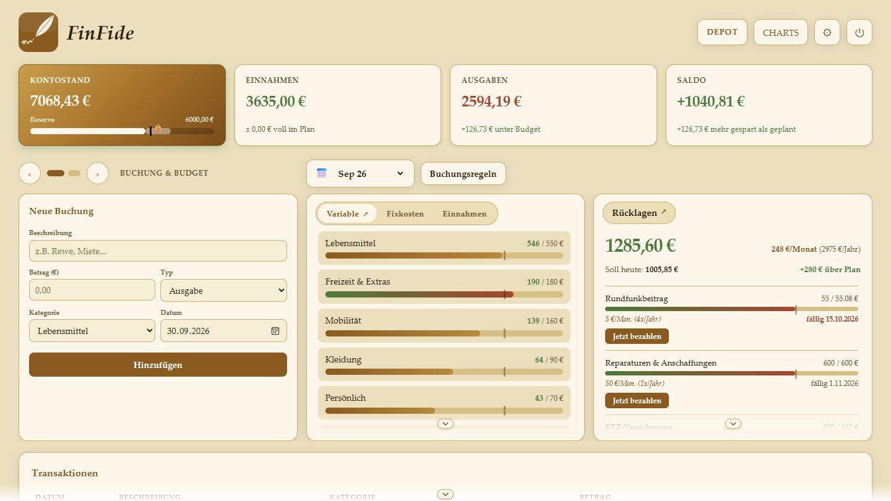
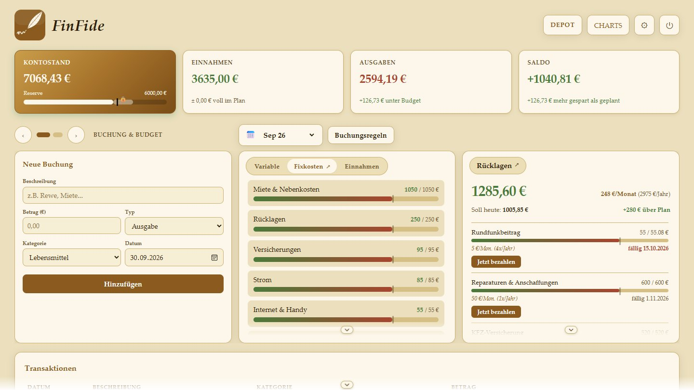
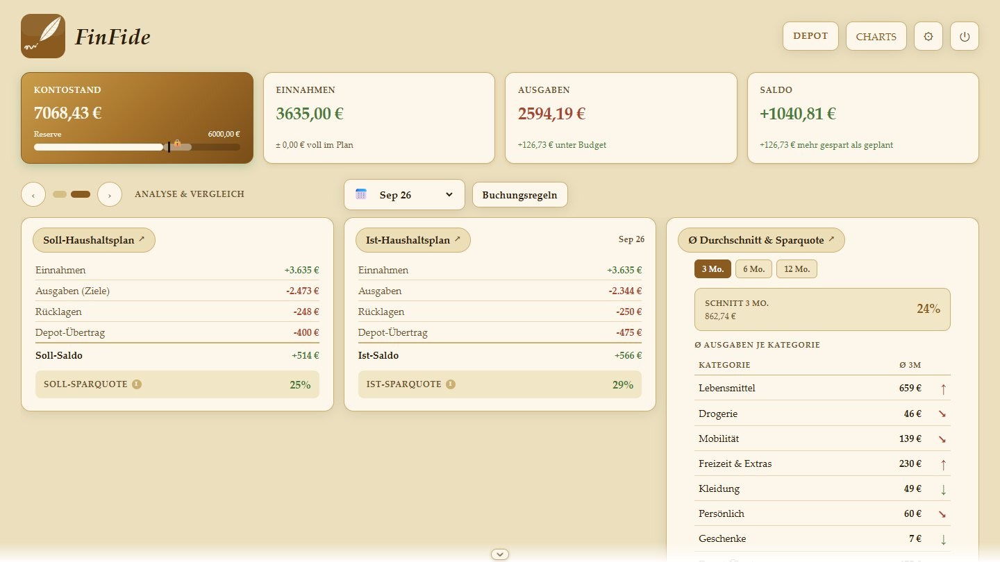
Depot
Alle Depots, alle Anlageklassen – mit ehrlichen Zahlen aus den eigenen Buchungen.
- Mehrere DepotsNeobroker, Direktbank, Krypto-Börse – einzeln oder zusammen ansehen.
- Aktien, ETFs, Krypto, EdelmetalleAktuelle Kurse, Aufteilung nach Position, Klasse oder eigenem Thema.
- Wertzuwachs mit persönlicher Rendite p. a.Aus Buchungen und Kursverlauf zurückgerechnet – Einzahlungen werden berücksichtigt.
- Sparpläne, Verrechnungskonto und DividendenFällige Raten gesammelt bestätigen; Dividenden mit Prognose, Kalender und Kennzahlen je Position.
- These je Wert mit Thesen-CheckWarum gekauft, was dagegen spricht, wann die These bricht – festgehalten. Ein verblassender Haken erinnert an die nächste Prüfung, der Thesen-Check liefert den fertigen Prompt für die eigene KI.
- CSV-Import und Excel-ExportBroker-Exporte einlesen; Jahresübersicht mit Verkäufen und Dividenden als Excel-Mappe.
Steuerbeträge werden aus der Brokerabrechnung eingetragen. Manuell erfasste Beträge – FinFide berechnet keine Steuern und übernimmt keine Haftung für die Eingaben.
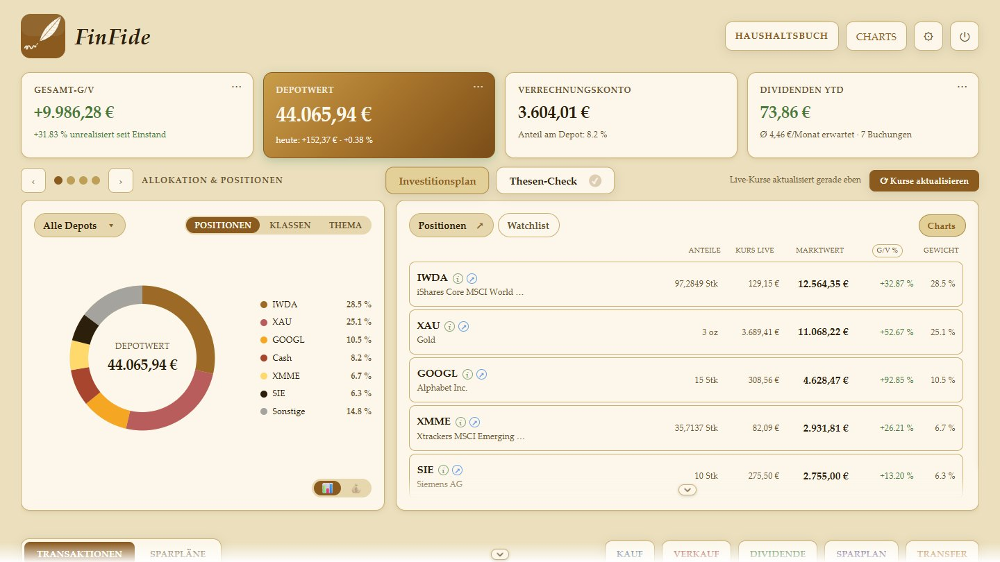
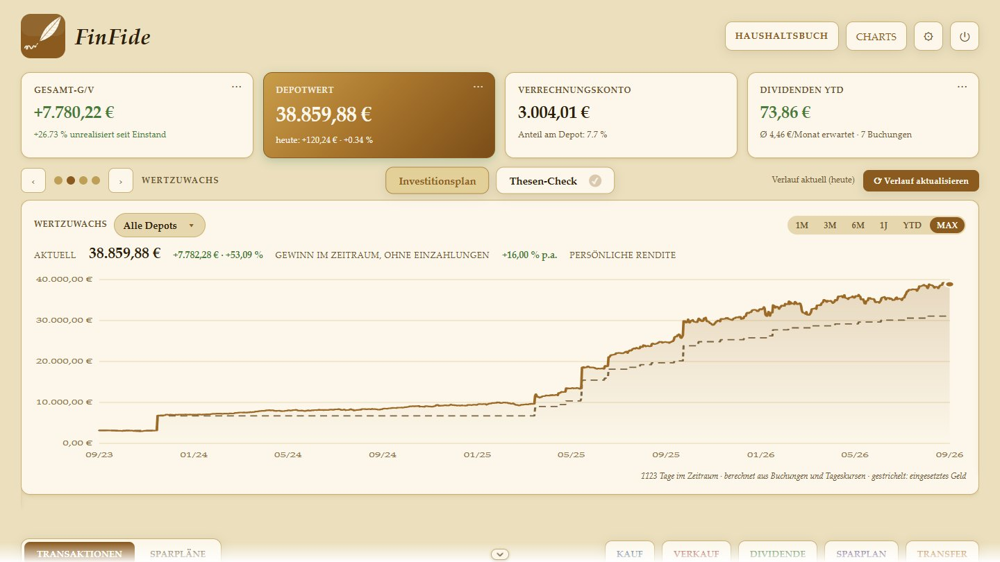
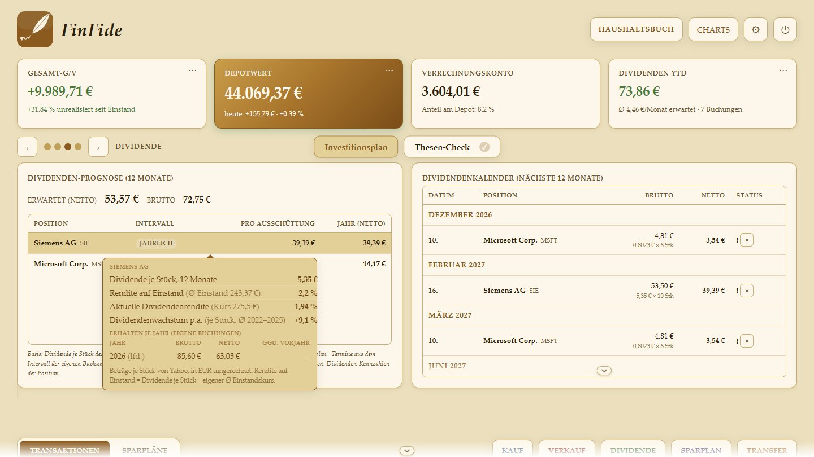
Charts
Ein eigenes Analyse-Fenster – auch mehrere nebeneinander. Werkzeuge für eigene Entscheidungen, keine Empfehlungen.
- Indikatoren ohne LimitGleitende Durchschnitte, RSI, MACD, Volumenprofil und mehr – als Setup speichern und per Klick wechseln.
- Watchlists nach ThemaEigene Listen wie „Raumfahrt“ oder „KI & Chips“, Werte direkt vergleichen.
- Scan auf KnopfdruckEigene Bedingungen über eine ganze Liste prüfen.
- Zeichnen, Notizen, OrdersTrendlinien bleiben gespeichert, Anlagethese je Wert, Limit-Orders als Merkzettel.
- Eigene Käufe im ChartEinstiege und Verkäufe aus dem Depot direkt sichtbar.
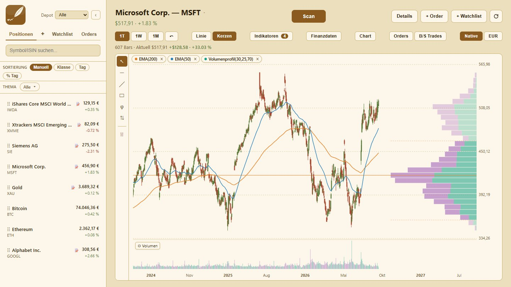
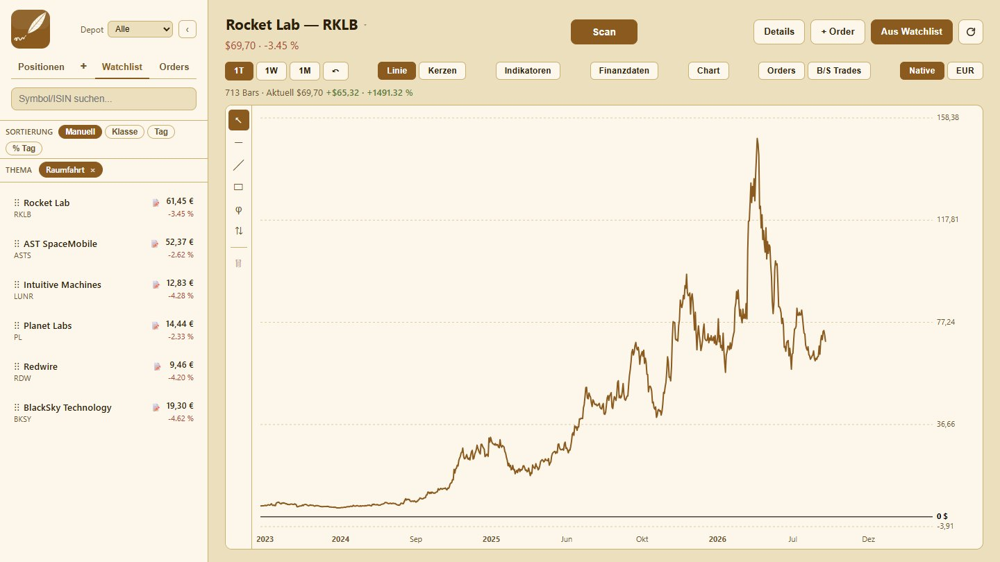
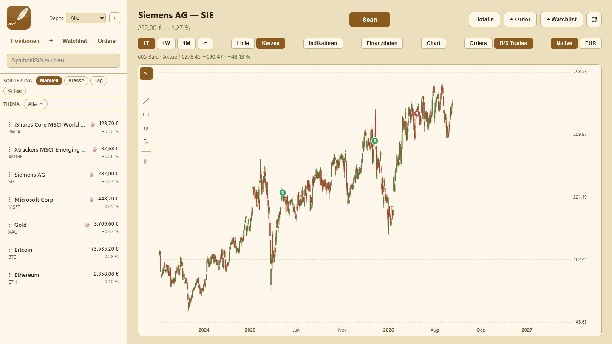
Eigene Ansicht
Aussehen nach eigenem Geschmack – für Haushaltsbuch, Depot und Charts getrennt.
- Sechs FarbschemasFinFide, Grün, Dunkel, Sky, Matrix, Cyberpunk.
- Eigenes FarbschemaJede Farbposition frei wählbar, Oberfläche matt oder glänzend.
- HintergrundbildEigenes Bild mit einstellbarer Transparenz.
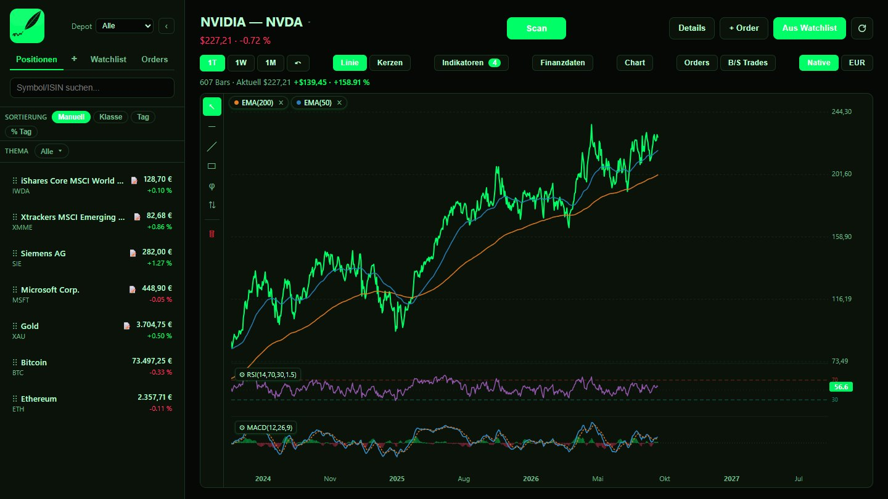
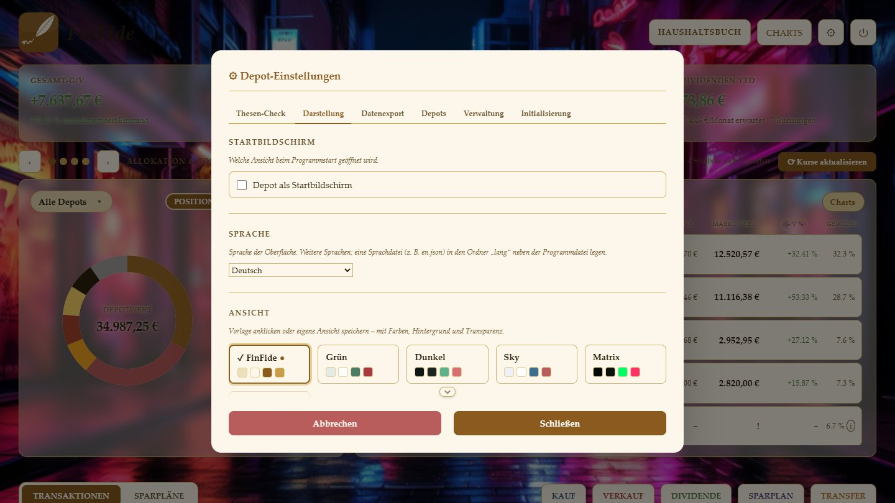
Nicht das Größte – das Passende.
Spezialisierte Werkzeuge können in ihrer Disziplin mehr. FinFide bündelt, was Privatanleger im Alltag brauchen – in einem Programm, einmal gekauft.
| FinFide | Depot-Tracker in der Cloud | Chart-Plattform | Haushaltsbuch-Software | |
|---|---|---|---|---|
| Bezahlmodell | Einmalkauf | meist Abo | Abo für mehr Indikatoren | oft Jahreslizenz |
| Haushaltsbuch | ✓ | ✗ | ✗ | ✓ |
| Depot mit mehreren Depots | ✓ | ✓ | ✗ | teilweise |
| Charts mit Indikatorenohne Limit | ✓ | ✗ | im Abo | ✗ |
| Daten lokal auf dem PC | ✓ | ✗ Cloud | ✗ Cloud | meist |
| Ohne Anmeldung | ✓ | ✗ | ✗ | teilweise |
| Sparrate Haushalt → Depotmit einer Buchung | ✓ | ✗ | ✗ | ✗ |
In drei Schritten startklar.
Kaufen
Nach dem Kauf kommt sofort eine E-Mail mit Lizenzschlüssel und Download-Link.
Installieren
Programm starten, Ordner wählen, Lizenzschlüssel eingeben. Kein Konto nötig.
Loslegen
Kategorien anpassen, Depot anlegen oder per CSV einlesen – die Anleitung führt durch.
Häufige Fragen.
Für wen ist FinFide gemacht?
Für Privatanleger mit langem Anlagehorizont – ob gerade beim Einstieg ins Investieren oder schon mittendrin. Für alle, die Haushaltsbuch, Depot und Charts an einem Ort haben wollen, statt ständig zwischen Werkzeugen zu wechseln und immer wieder neue passende Tools zu suchen. Ein typischer Tag: einmal hineinschauen, Kurse aktualisieren, Haushalt buchen, wenn etwas anfällt, die Watchlist durchgehen, einen Scan über die eigenen Bedingungen laufen lassen und bei Bedarf die eigene These prüfen.
Wo FinFide nicht passt: Für Daytrading, Scalping und alles, was auf Echtzeit-Kursen, Orderbuch oder Live-Daten beruht. Die Kurse kommen verzögert aus öffentlichen Quellen (Yahoo Finance) – wer im Minutentakt handelt, ist mit einem Trading-Werkzeug besser bedient.
Berechnet FinFide Steuern?
Nein. Einbehaltene Steuern und Gebühren werden aus der Brokerabrechnung eingetragen. FinFide zeigt diese Eingaben, fasst sie zusammen und exportiert sie. Manuell erfasste Beträge – FinFide berechnet keine Steuern und übernimmt keine Haftung für die Eingaben.
Werden Finanzdaten in die Cloud hochgeladen?
Nein. Alle Daten bleiben auf dem eigenen Rechner – kein Konto, kein Cloud-Sync, kein Server. Kurse werden anonym über öffentliche Schnittstellen abgerufen, ohne Bezug zum Depot.
Muss ein Bankkonto verknüpft werden?
Nein. Buchungen werden von Hand erfasst oder per CSV-Import aus dem Broker-Export eingelesen.
Woher kommen die Kurse?
Aus öffentlich zugänglichen Kursquellen im Internet. Ohne Internet zeigt FinFide die zuletzt geladenen Kurse; Haushaltsbuch und Buchungen funktionieren weiter.
Wie funktionieren Updates?
Neue Versionen werden im Programm angekündigt. Die neue Datei ersetzt die alte, alle Daten bleiben erhalten. Für Käufer ohne Aufpreis.
Auf welchen Systemen läuft FinFide?
Auf Windows 10 und Windows 11. Eine Mac- oder Linux-Version ist nicht geplant.
Was, wenn das Programm nicht passt?
Innerhalb von 30 Tagen gibt es den Kaufpreis zurück – eine kurze Mail genügt. Details unter Erstattung.